Это игра типа "3 в ряд". Вы можете менять местами два рядом стоящих драгоценных камня. Каждые 3 идущие подряд в ряду будут удаляться и те что сверху будут падать до этого места.
Вы проиграете если у вас станет отрицательный счет, или у вас не останется ходов (и при этом изменение драгоценных камней не исправит ситуации)
Всего есть 8 драгоценных камней, не во всех уровнях есть все, чем сложнее уровень, тем меньше дальних камней (первые 4 есть во всех уровнях):
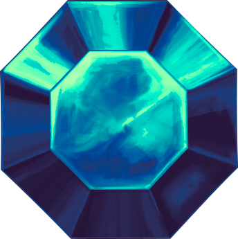
Обсидиан: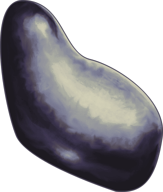
Изумруд: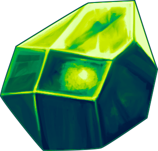
Аметист: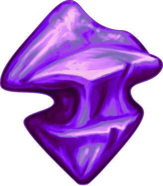
Гелиодор: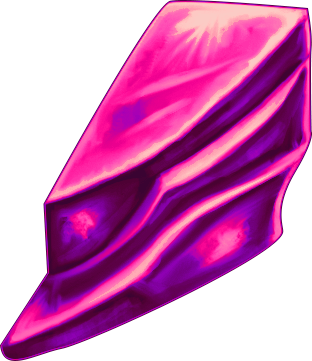
Серебрянный камень: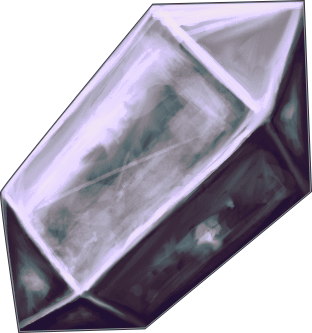
Золотой камень: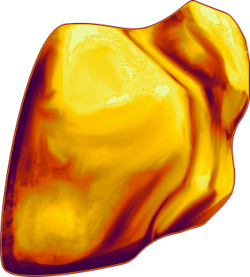
Черный алмаз:Вам будут мешать камни, взрывающиеся камни, а также пустые места, вот они слева направо:
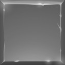
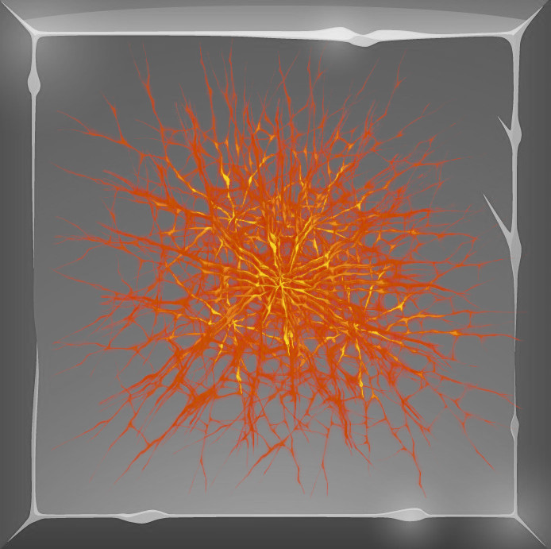
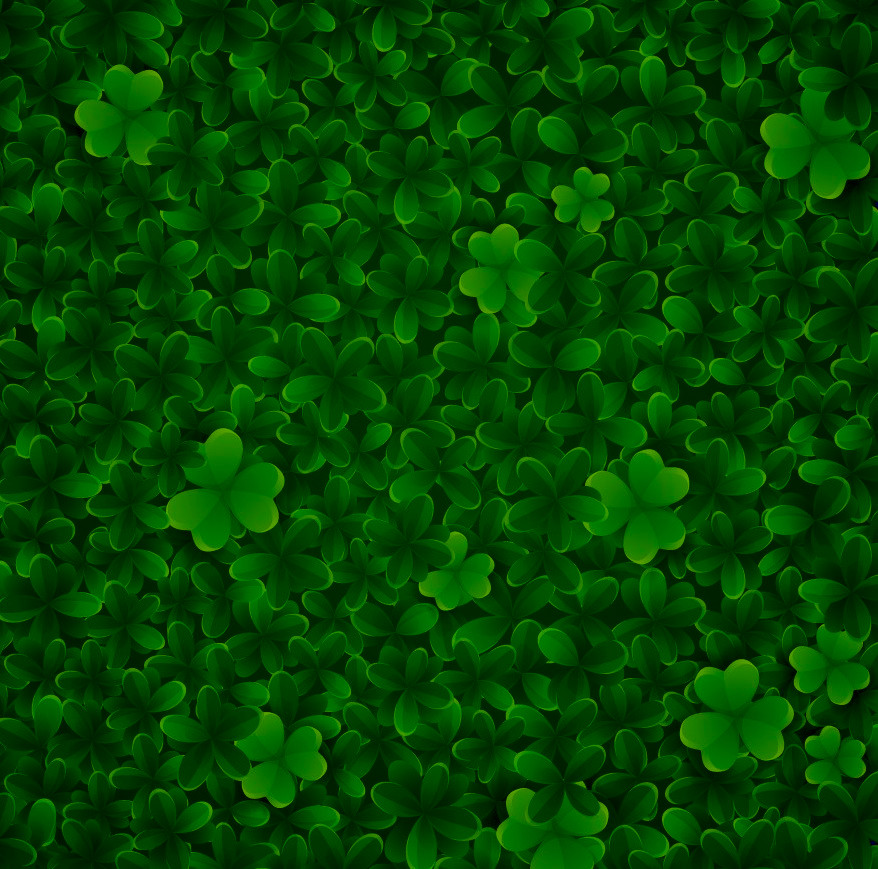
Вы не можете никак сдвинуть камень, но вы можете его "уронить" - сделать так чтобы он дошел до нижней границы, а затем упал за нее из поля
то же можно сделать со взрывающимся камнем
С пустотой вы ничего не сможете сделать, но все "проскакивает" сквозь нее
За камнями, драгоценными камнями, рубинами и т.д. есть стена. Каждое удаление будет рушить стены и давать вам очки, после чего будет появляться стена меньшей плотности, в данном порядке
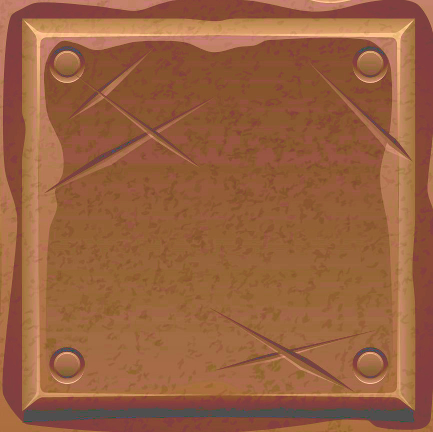
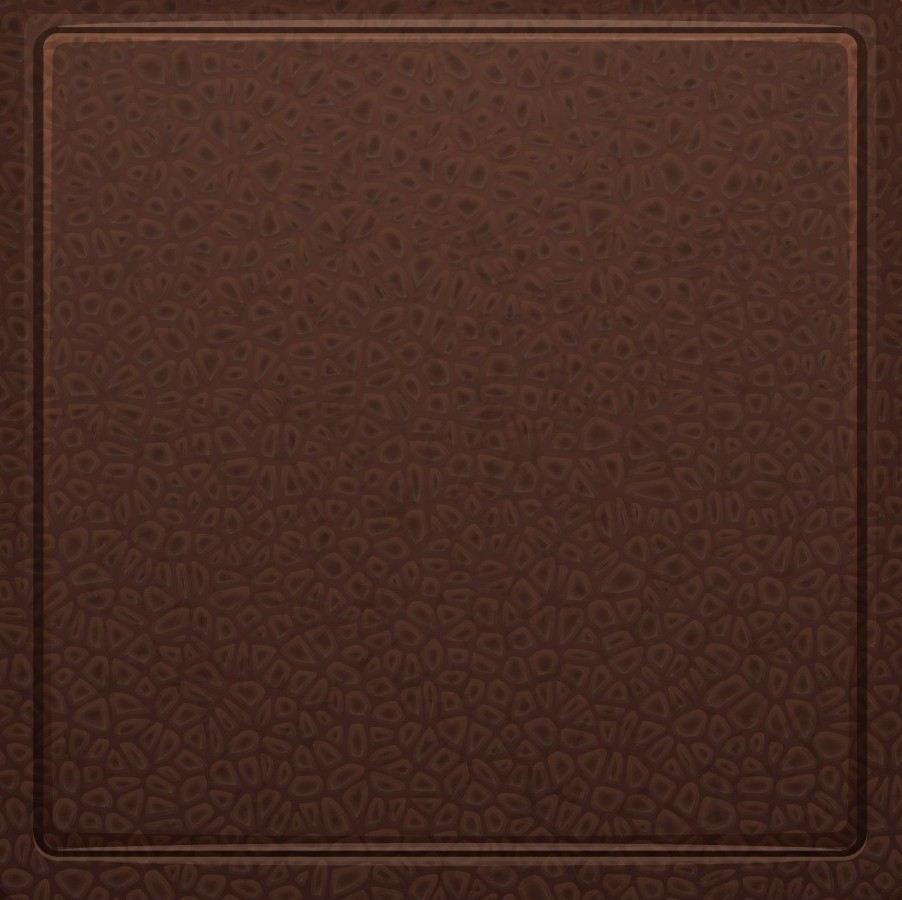
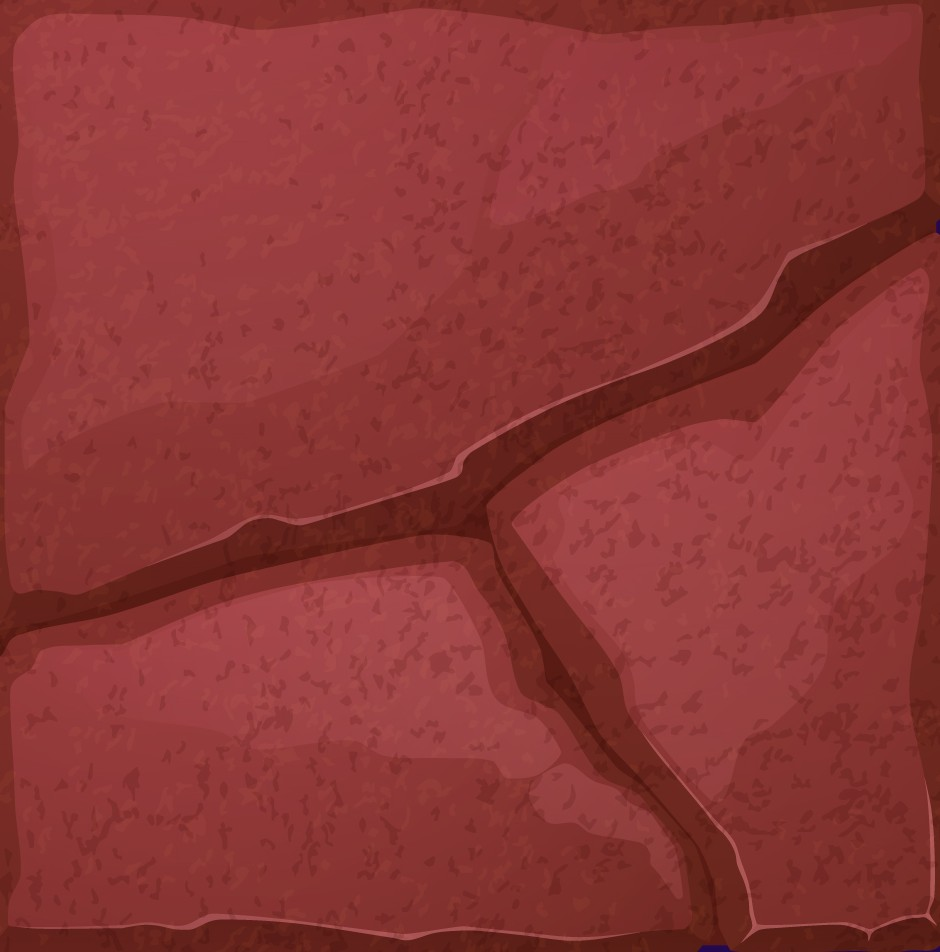
Стена самого нижнего уровня не будет ломаться, но также и не будет давать счет, она является базовой:
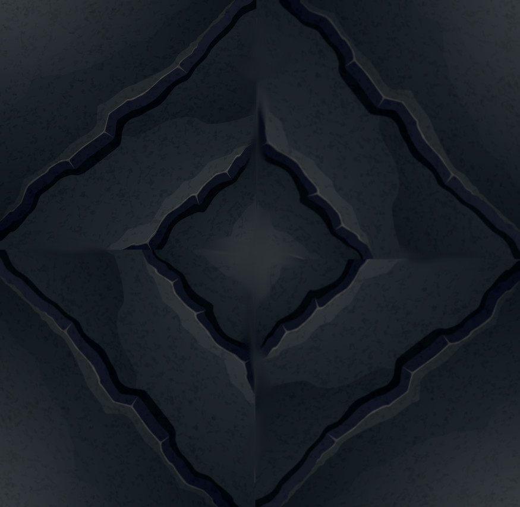
Помимо этого, если вы соберете не 3 идущие подряд камни, а 4, то вы получите бонус-вертолет:
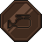
При его применении (обмене с драгоценным камнем) он уничтожает всё, кроме камней в радиусе 1 (уничтожение взрывающегося камня забирает у вас очень много очков)
Отдельно этот бонус имеет особенность - если вы соберете три бонуса в ряд, так что последний будет сдвинут вами в этот ряд, то радиус уничтожения увеличится на 1 для последнего бонуса, к примеру:
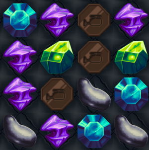
Сделает радиус уничтожения равным 2 (то есть квадрат 5x5)
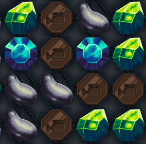
А этот, сделает радиус уничтожения равным 3 (то есть квадрат 7x7)
Если вы соберете 5 идущих подряд камней, то вы получите бонус-молот:
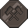
При его применении он уничтожает строку и столбец, до ячеек которых он может дотянуться
Например в примере ниже, при применении бонуса налево, камень и клетка слева от камня не уничтожатся; вся остальная строчка и весь столбец уничтожатся полностью
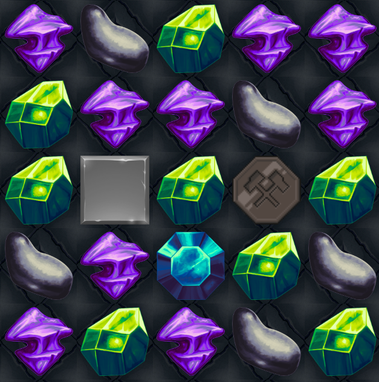
Если вы получите счет больше 3000, вы получите бонус-перестройку (он дается всего единожды за игру):
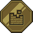
При его применении он уничтожает случайную четверть драгоценных камней (при этом он не уничтожает рубины)
Если вы соберете 6 и больше, то вы получите рубин (и хорошее количество очков):
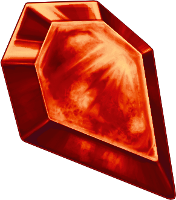
Он является драгоценным камнем и его можно двигать обычным образом. Помимо этого он как и обычный камень может упасть с поля (будьте осторожны - в таком случае вы теряете те очки, что он стоит).
Более того, его можно уничтожить бонусом-вертолетом и бонусом-молотом, за что вы также потеряете и рубин и очки.
Если вы соедините три или более подряд идущих рубинов, то вы получите по многу очков за каждый уничтоженный, этим они и ценны
В самой игре у вас слева (или сверху) виден счет, кнопка перезапуска уровня:
Затем находятся остатки по карте - количество оставшихся камней (сумма по тем что есть на карте и ещё должны выпасть), а также количество стен (двойная стена считается как 2, тройная - 3)
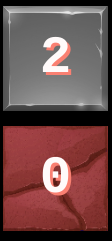
Затем находится кнопка редактирования уровня:
Она позволяет вам слегка отредактировать уровень:
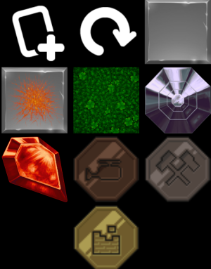
Первая кнопка создает новый стандартный уровень в конец и выходит из режима редактирования:
Вторая кнопка восстанавливает начальный список уровней и выходит из режима редактирования:
Следующие кнопки позволяют создать базу уровня - при нажатии на них вы можете "рисовать" данной клеткой - клетка поля на которую вы нажимаете становится выбранной
Все тайлы вам уже знакомы кроме нижнего, он обозначает драгоценный камень любого типа (кроме рубина, так как он необычен) и заменяется при игре на случайный
заметьте, что если вы попытаетесь создать уровень, в котором в каких-то клетках явно не может идти игра, то редактор не позволит вам так сделать
после того как вы закончили, нажмите снова на кнопку редактирования и изменения сохранятся
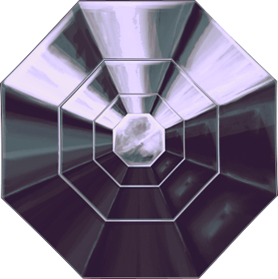
Затем находится кнопки смены текущего уровня - влево и вправо, а также кнопка вызова этой справки
Надеемся что вам понравится эта игра; возможно в будущем тут появятся бОльшие возможности редактирования уровней, возможности обмена уровнями, сюжет, а также более удобная графика